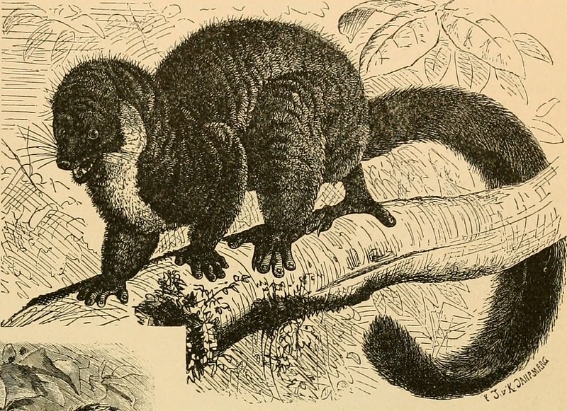
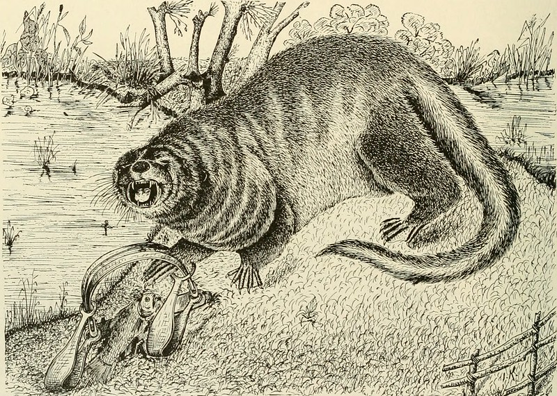
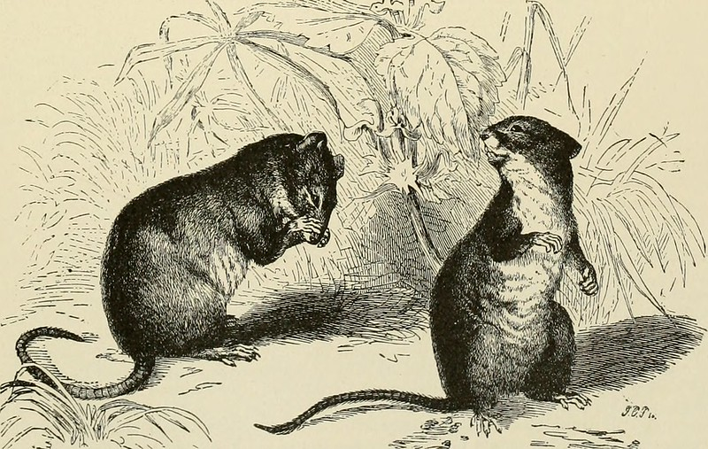
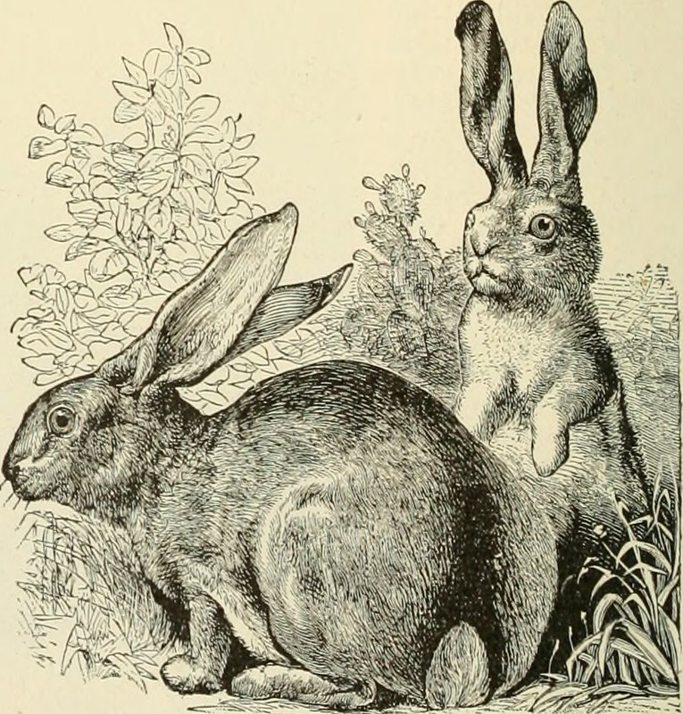
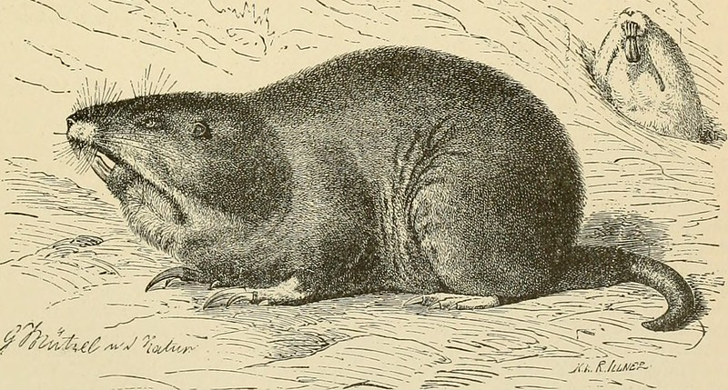
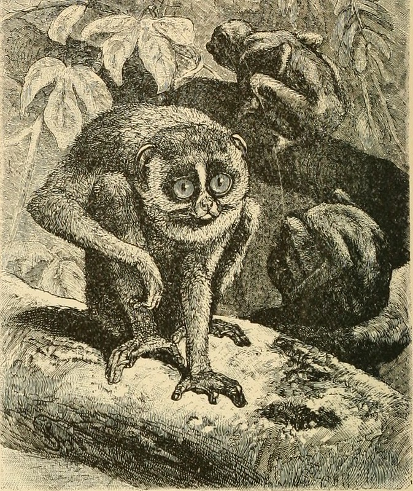

df <- read.csv(file.choose())
tl;dr
In which I reflect on my past-self’s journey toward better R code.
This post suggests alternatives to file.choose(), setwd() and attach(); encourages sensible project structure; and talks about the benefit of writing functions.
A startling discovery
I dug up a time capsule from a decade ago. It contained poorly constructed R code.
Twist: it was me who wrote it.
Reading these scripts brought back the sweet nostalgia of running the vanilla R GUI on my precious white MacBook, using R as little more than an interactive calculator for ecological analyses.
There were some things in that code that look alien to me now (click to jump ahead):
file.choose()andsetwd()for non-reproducible file locations- The
attach()function for basically hiding his data and forgetting it exists - Working in the same R workspace at all times regardless of context
- Repeating code over and over and over and over and…
This post is about learning. It’s about looking for improvements. Everyone is a beginner at some point and everyone is taught in a different way. There’s no shame in that.
Hopefully this post might act as a shortcut for you to hear about some alternative techniques.

1. Falling foul of a file-finding fail
Can’t remember where a file is? Don’t want long file paths cluttering your scripts? Nevermind! Past-Matthew was using file.choose(), which opens your file explorer so you can navigate to the correct file.
But how can anyone reading your script (including you) know what file you actually read in? It’s not recorded in your script. You can’t re-run this code without that information.
Solutions:
- good project-folder structure that puts all the elements of your analysis — data, scripts, outputs — in one place so its portable and others can use it without having to change anything
- relative file paths that start from your project folder, so you can use computer-agnostic paths like
data/cool-data.csvratherpath/specific/to/my/machine/data/cool-data.csv
Tools:
- RStudio Projects encourage good folder structure and have the bonus of relative file paths, which start from the directory containing the .Rproj file.
- the {here} package by Kirill Müller also helps with relative file paths;
here()finds a file based on the perceived ‘home’ for the project, or just where a manually-placed hidden.herefile is placed withset_here()
Justified arson
You may wonder why I haven’t mentioned setwd() as a solution here. It’s because Jenny Bryan will set your computer on fire.
But past-Matthew did this.1 He used setwd() to point to where a project was stored locally:
setwd("/Users/Matthew//local/path/to/project/")
df <- read.csv("data/some_file.csv")What’s the problem? The bit in setwd() is not reproducible — it’s the file location on one particular machine only.

2. Getting too attached
This problem begins with a question: how does R know where to look for a variable?
Here’s three ways to calculate Pokémon body mass index by reference to variables in a data set:
# Read Pokémon data from URL
df <- suppressMessages(readr::read_csv(
"https://raw.githubusercontent.com/mwdray/datasets/master/pokemon_go_captures.csv",
))
# BMI calculation three ways
x <- mean(df$weight_kg / df$height_m ^ 2) # dollar notation
y <- mean(df[["weight_kg"]] / df[["height_m"]] ^ 2) # square brackets
z <- with(df, mean(weight_kg / height_m ^ 2)) # with() function
# All produce the same results?
all(x == y, y == z, x == z)[1] TRUESo each line specifies the data frame object where R should look for the named variables. If you don’t provide this object, R will error:
mean(weight_kg / height_m ^ 2)## Error in mean(weight_kg / height_m ^ 2) : object 'weight_kg' not foundR was searching for the weight_kg variable in a few places, starting with the global environment, but couldn’t find it. You can see the search path it takes:
search()[1] ".GlobalEnv" "package:stats" "package:graphics"
[4] "package:grDevices" "package:utils" "package:datasets"
[7] "package:methods" "Autoloads" "package:base" The data object isn’t in there, so that’s why it can’t find those variables.
Past-Matthew got around this by using attach(), which lets you add objects to the search path.
attach(df)
search() # now 'df' is in the search path [1] ".GlobalEnv" "df" "package:stats"
[4] "package:graphics" "package:grDevices" "package:utils"
[7] "package:datasets" "package:methods" "Autoloads"
[10] "package:base" The following expression can now be calculated because R can find the variable names in the attached df object.
mean(weight_kg / height_m ^ 2)[1] 31.17416So we never need to refer to the data frame name at all. Wow, how can that be bad?
Here’s one reason. Consider a data set with column names that match our original:
df2 <- df[species == "caterpie", ]
attach(df2)The following objects are masked from df:
charge_attack, combat_power, fast_attack, height_bin, height_m,
hit_points, species, weight_bin, weight_kgYou might be able to guess the problem: R will get variables from df2 first, since it was the most recently attached.
Bad news: this means the code we wrote earlier will get a different result.
mean(weight_kg / height_m ^ 2)[1] 31.64357This has serious implications for reproducibility and the confidence you can have in your results.
See also the ‘search list shuffle’ danger of attach() referenced in Circle 8.1.35 of The R Inferno by Patrick Burns.
Past-Matthew was using this approach because he was taught with Mick Crawley’s R Book. Mick says attach() ‘makes the code easier to understand for beginners’ (page 18)2 — possibly because expressions end up looking less cluttered. But this only sets up beginners (like me) for problems later. In fact, Mick even says, perhaps confusingly, to ‘avoid using attach wherever possible’ in his book.
Pro tip: if you do ever use attach() (don’t), you’ll want to make sure you detach() your objects from the search path.
detach(df)
detach(df2)
3. Polluting the environment
Past-Matthew clearly executed different projects and scripts in the same running instance of R.
The potential for confusion and error is high in this scenario. Was the object results created from analysis1.R or analysis2.R? Maybe results is now out of date because the code has been updated.
I’m also certain that the content of past-Matthew’s workspace was being saved at the end of each session — the default behaviour — meaning all that trash would come back next time he fired up R.
There were also some strange defensive lines like the following, which pre-emptively unloads the {nlme} package because of a namespace conflict with {lme4}:
detach("package:nlme") # conflicts with lme4I assume this was because past-Matthew was never quite sure of the state of his current working environment.
These days I treat everything in my environment with suspicion and restart R regularly and rebuild objects from scratch. This means I can have confidence that my script does what I think it does and also stops interference from older objects that are clogging up my environment.
I also modified the default behaviour of RStudio to prevent my workspace being saved, which means I can start afresh when I open a project. To do this, untick ‘Restore .Rdata on startup’ and set ‘Save workspace to .RData on exit’ to ‘Never’ in Tools > Global Options > General > Basic > Workspace.
Read more about workflow in the R for Data Science book by Garrett Grolemund and Hadley Wickham.

4. There’s a function for that
Turns out past-Matthew repeated loads of code because functions looked too much like Real Programming and were therefore Quite Hard.
Here’s a simple example of code repetition that was pretty common in past-Matthew’s scripts:
# Subset the data and then get a mean value
sub_koffing <- subset(df, species == "koffing")
mean_koffing <- round(mean(sub_koffing[["weight_kg"]]), 2)
# Do it again for a different species
sub_paras <- subset(df, species == "paras")
mean_paras <- round(mean(sub_paras[["weight_kg"]]), 2)
# Do it again for a different species
sub_geodude <- subset(df, species == "geodude")
mean_geodude <- round(mean(sub_koffing[["weight_kg"]]), 2)
# Print results
mean_koffing; mean_paras; mean_geodude[1] 0.92[1] 5.39[1] 0.92You know this is bad news; copy-pasting leads to mistakes. See how two of those outputs are suspiciously similar? Oops.3
(Note the use of semi-colons here as well. Past-Matthew seemed to like using these to print multiple results, but I don’t use these anymore and don’t see anyone else doing it.)
Functions let you write the meat of the code just once, eliminating the copy-paste error. You can then loop over the variables of interest to get your results.
The effort of learning to write your own functions is worth it to avoid the problems. See R for Data Science for more on this.
Here’s one way to tackle the code repetition above:
# Function to calcuate a rounded mean value for a given species
get_sp_mean <- function(
sp, data = df, var = "weight_kg", dp = 2
) {
sub_sp <- subset(data, species == sp) # subset data
mean_sp <- round(mean(sub_sp[[var]]), dp) # get mean
return(mean_sp) # function will output the mean value
}
# Create a named vector to iterate over
species <- c("koffing", "paras", "geodude")
names(species) <- species # make it a named vector
# Iterate over the vector to apply the function
purrr::map(species, get_sp_mean)$koffing
[1] 0.92
$paras
[1] 5.39
$geodude
[1] 23.24Friendship ended with code repetition. Now bespoke functions and {purrr} are my best friends.

Reflections
I think it’s a good exercise to look back and critique your old code. What changes have you made to your coding practices over time?
There’s no shame in writing code that does what you want it to do. I can see why past-Matthew did the things he did. But I’m also glad he stopped doing them.
See you in ten years to look back on the inevitably terrible code I’ve written in this blog.
Environment
Session info
Last rendered: 2023-07-22 11:47:37 BSTR version 4.3.1 (2023-06-16)
Platform: aarch64-apple-darwin20 (64-bit)
Running under: macOS Ventura 13.2.1
Matrix products: default
BLAS: /Library/Frameworks/R.framework/Versions/4.3-arm64/Resources/lib/libRblas.0.dylib
LAPACK: /Library/Frameworks/R.framework/Versions/4.3-arm64/Resources/lib/libRlapack.dylib; LAPACK version 3.11.0
locale:
[1] en_US.UTF-8/en_US.UTF-8/en_US.UTF-8/C/en_US.UTF-8/en_US.UTF-8
time zone: Europe/London
tzcode source: internal
attached base packages:
[1] stats graphics grDevices utils datasets methods base
loaded via a namespace (and not attached):
[1] crayon_1.5.2 vctrs_0.6.3 cli_3.6.1 knitr_1.43.1
[5] rlang_1.1.1 xfun_0.39 purrr_1.0.1 jsonlite_1.8.7
[9] bit_4.0.5 glue_1.6.2 htmltools_0.5.5 hms_1.1.3
[13] fansi_1.0.4 rmarkdown_2.23 evaluate_0.21 tibble_3.2.1
[17] tzdb_0.4.0 fastmap_1.1.1 yaml_2.3.7 lifecycle_1.0.3
[21] compiler_4.3.1 htmlwidgets_1.6.2 pkgconfig_2.0.3 rstudioapi_0.15.0
[25] digest_0.6.33 R6_2.5.1 tidyselect_1.2.0 readr_2.1.4
[29] utf8_1.2.3 curl_5.0.1 parallel_4.3.1 vroom_1.6.3
[33] pillar_1.9.0 magrittr_2.0.3 tools_4.3.1 bit64_4.0.5 Reuse
CC BY-NC-SA 4.0